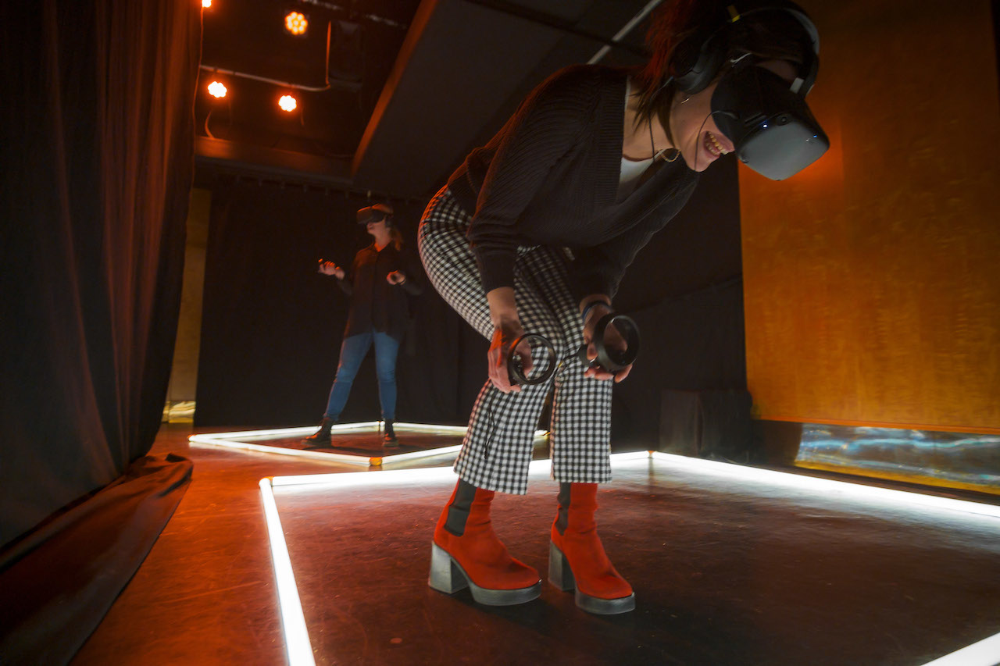
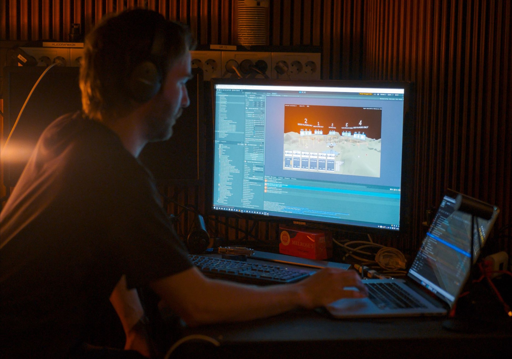
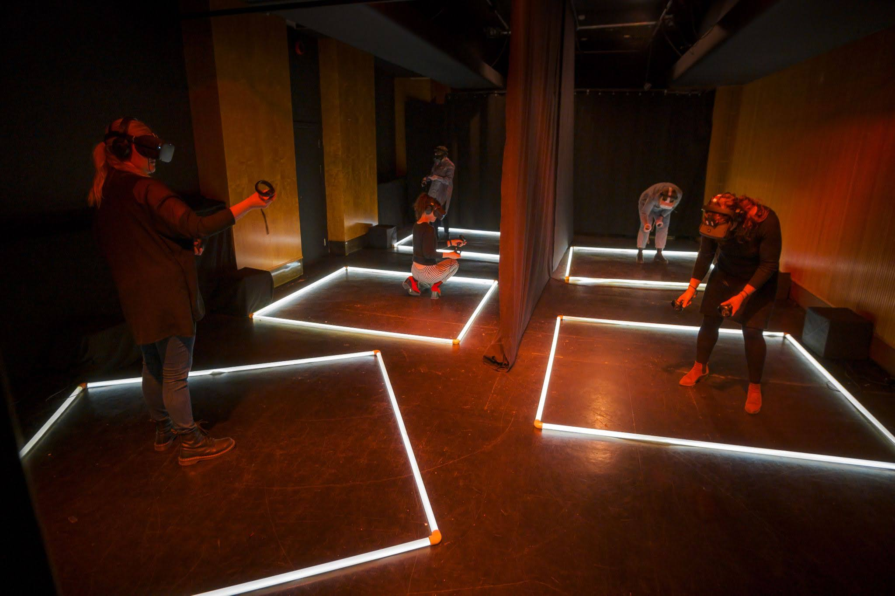

Parallel People / Hliðstætt Fólk - Interactive VR theatre
2020-2022
Design, development, direction
A live interactive social theatre experience about trust, communication and questioning your sources of information.
Nominated for Best Immersive Performance at Raindance Immersive 2022.

One day, you wake up and find yourself trapped in a transparent box in a hostile, barren landscape - but it appears you're not alone.
There is the Caretaker, who says they just want to keep you safe inside this box, promising to show you wonders beyond imagining.
There are the Others, individuals trapped in boxes just as you are - some of whom are acting strangely.
And the Voice in your head - together all of them are talking, acting, behaving at odds with one another - so who will you believe?
Based on my theatre company Huldufugl's international award-winning VR experience 'Kassinn / A Box In The Desert' (one of the world's first experiences of its kind), this show expands the narrative to allow five audience members to determine their own story against a barrage of conflicting voices.
My role on this project was lead developer, director and live show operator, with the concept and script co-created by the whole amazing team.
The show takes place entirely in VR using the Oculus Quest headset.

